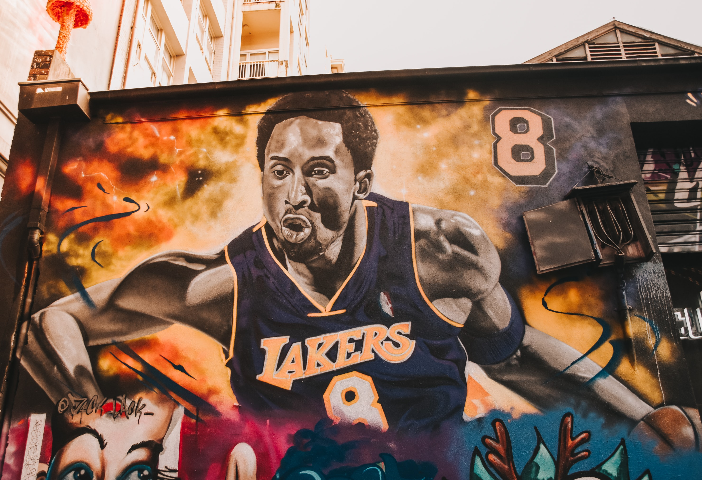

Kobe Bryant
Kobe "Bean" Bryant has a very strong case to be the greatest and has stats to back it up. He played for 20 seasons in the NBA and he averaged 25pts 5.2rebs and 4.7asts on 44.7% shooting. He also added 1.4stls a game. In that time he had seven finals appearances and won 5 of those adding on 2 finals MVPs. He even had one regular season MVP. The second most points in a game was by Kobe and he had 81 in only one game! In his 20 year career he had 18 allstar games attended. One thing he had that no one has had beofre is his mamba mentality. His mentality to be the best is what won him his most rings.